Gaussian-process Bayesian optimization
Uses prior evaluated candidates to propose subsequent parameter combinations intended to reduce a specified loss. Convergence is assessed across successive candidate evaluations.
 BAITSSS
BAITSSSUse of Landsat land surface temperature in the evaluation and optimization of hourly evapotranspiration and soil-water balance simulations.
The maintained BAITSSS model integrates hourly meteorology, vegetation, surface energy exchange, two-layer soil water, and modeled irrigation. Landsat thermal observations are an independent check on simulated surface-energy behavior. The new Optimize workflows are optional experiments and do not overwrite Original simulation results.
Physically, surface temperature is influenced by the partitioning of net available energy among sensible and latent heat fluxes. It is also influenced by canopy geometry, soil exposure, atmospheric forcing, emissivity, aerodynamic resistance, advection, and measurement scale. Multiple parameter combinations can reproduce similar temperatures yet different ET or irrigation histories.
The preflight checks input readiness. Completed simulations can be evaluated using temperature agreement and independent field observations.
| Aspect | Upper Route — experimental pixel/CSV | Lower Route — spatial Original-run optimization |
|---|---|---|
| Input authority | User-supplied hourly/pixel CSV with location, weather, vegetation, and observed thermal values. No automatic Lower lookup. | Frozen prepared data and run manifest from a completed spatial Original BAITSSS simulation. |
| Primary purpose | Fast, controlled sensitivity and optimizer comparisons for a supplied pixel or small set of pixels. | Independent full-period, spatially referenced candidate simulation on the Original model grid. |
| Soil water / irrigation | Recomputed within each explicitly configured experimental trajectory. | Candidate-owned hourly soil-state chaining and simulated irrigation response must be audited. |
| Thermal comparison | Observed acquisition LST against Original and candidate modeled temperatures; combined-temperature proxy is experimental. | Run-matched verified Original export, scene/time provenance, and candidate/model-grid matched observations. |
| Output maturity | Diagnostic series and comparisons; not a replacement for maintained Original. | Read-only preflight demonstrated for Citrus; full-period candidate execution and independent validation must complete. |
Uses prior evaluated candidates to propose subsequent parameter combinations intended to reduce a specified loss. Convergence is assessed across successive candidate evaluations.
Provides a stochastic benchmark for comparing Gaussian-process optimization across repeated trials.
Varies selected controls and examines responses, interactions, stability, and physical plausibility. Method availability and automatic end-to-end execution differ by route and build.
Common experimental controls include minimum canopy resistance, management allowed depletion (MAD), rooting depth, canopy albedo, and soil albedo. All other settings should remain traceable to their recorded authority. Apparent thermal gains must be examined jointly with ET, irrigation, and soil moisture.
Upper Route pixel trials and Lower Route thermal comparisons have been explored for the 3,096-hour season. Thermal agreement and parameter rankings differ by method and training/holdout selection. In one Lower Route comparison, the GP thermal RMSE was slightly worse than Original (5.350°C versus 5.218°C).
These outcomes are exploratory; they do not independently validate seasonal ET.
The completed Original spatial run contains 8,737 hours. A verified Original thermal replay was generated for 16 MTL-timed Landsat acquisitions; the AOI temperature comparison rendered. The Lower GP full-period read-only preflight passed with the 163×128 Original grid and 53,164 referenced unique rasters; one full-period candidate began executing.
A successful preflight or partial candidate run is not a completed ET validation result.
The thermal export and experimental analysis workflow has been exercised in a short Yuma case. Seasonal ground-ET comparisons, irrigation validation, and transferable optimization conclusions are not established here.
Site-specific lysimeter/EC availability and periods require confirmation.
Earlier Upper Route Kansas GP7 pixel experiments produced both improved and worsened thermal scores depending on fitting and holdout criteria; in another experiment, a random-search candidate had better training RMSE than the GP-selected candidate. These results motivate further comparisons among optimization methods using training and holdout observations.
The California citrus observation workflow also exposed genuine software-integration defects—legacy saved-state paths, different hour-selection conventions, and a strict all-scene common-valid-pixel requirement. These were addressed in the development build while preserving the Original run and keeping provenance and per-scene masks explicit. The publication-grade release still requires regression and reproducibility checks.
| Observed pattern | Possible interpretation | Evidence needed |
|---|---|---|
| Multiple methods agree in temperature and water budget | Potential robustness under tested assumptions. | Independent starts, broader bounds, withheld scenes, ground ET, and other sites. |
| Multiple methods agree in temperature but disagree in ET/irrigation | Non-identifiability or compensating errors. | ET partitioning, water balance, soil states, observed water application. |
| All methods retain the same thermal bias | Possible structural, forcing, representation, or observation-operator deficiency. | Bias diagnosis across time, scene quality, canopy fraction, radiometric vs aerodynamic temperature, flux observations. |
| Temperature improves but independent ET worsens | Thermal fit alone is not an adequate calibration objective. | Withheld lysimeter/EC ET, irrigation and storage closure. |
| Temperature and independent ET both improve | Evidence that thermal information adds predictive skill. | Repeatable site-by-site and holdout improvements with quantified uncertainty. |
BAITSSS simulates hourly ET and soil-water states between satellite overpasses. A separate research test can compare (a) uninterrupted Original simulation, (b) parameter-optimized simulation, and (c) an overpass-informed ET correction applied to the existing trajectory. The latter must be labeled retrospective and evaluated against ground ET; a corrected ET series without updated soil-water states is not automatically a closed water balance.
A Landsat temperature residual is measured in degrees Celsius, not millimeters of ET. It cannot simply be linearly interpolated into an ET correction. Such an experiment first needs a physically justified relationship between temperature and ET, independent performance testing, and rules governing irrigation and state updates.
The intended evaluation spans Kansas corn, California citrus, and Yuma lettuce, conditional on verifying the available lysimeter and/or eddy-covariance datasets for each site. Independent observations are evaluation evidence; they should not silently enter the thermal-only training objective.
| Test | Design |
|---|---|
| Baseline | Original BAITSSS with recorded forcing and management assumptions; no thermal calibration. |
| Thermal-only | Fit selected parameters on designated Landsat acquisition training dates; evaluate on withheld dates and ground ET. |
| Water-constrained | Separate experiment using measured irrigation and/or soil-water constraints; distinguish observed inputs from optimized management. |
| Comparisons | Hourly/daily and seasonal ET bias, RMSE/MAE, cumulative ET, E/T components, irrigation totals and timing, soil-water storage and water-budget residuals. |
| Measurement compatibility | Match EC footprint, lysimeter surface, land cover, geolocation, averaging period, quality flags, and energy-balance closure uncertainty. |
The figures show Landsat observations and experimental optimization workflows. General desktop interfaces are shown on the Software page. Click a figure to view the full-resolution image.
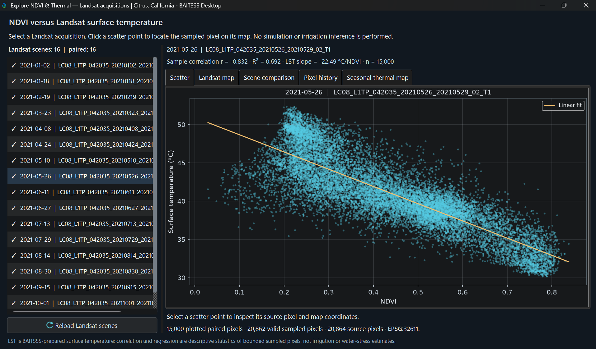
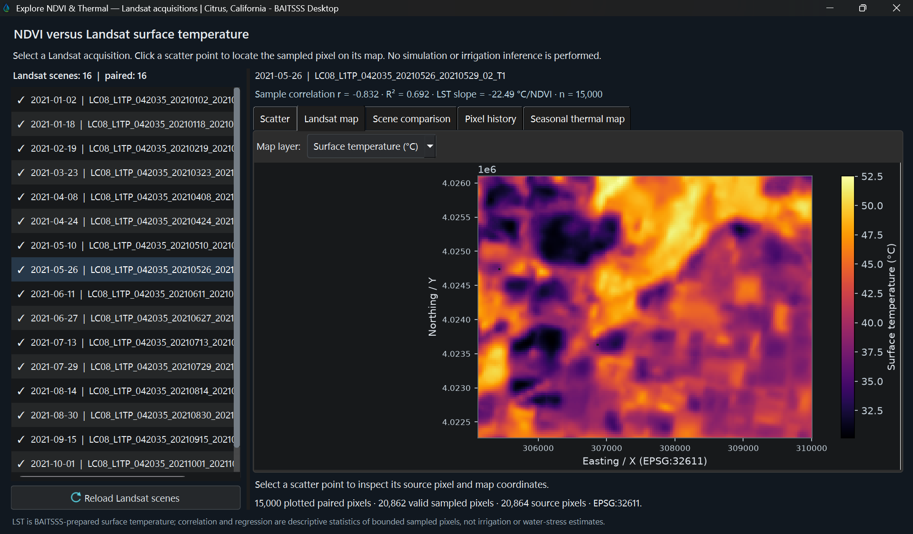
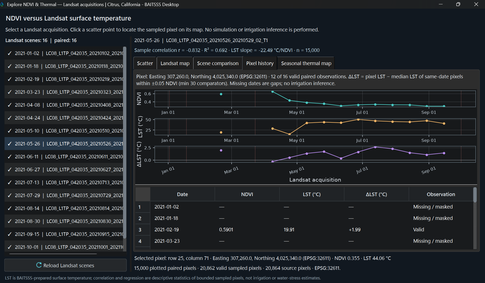
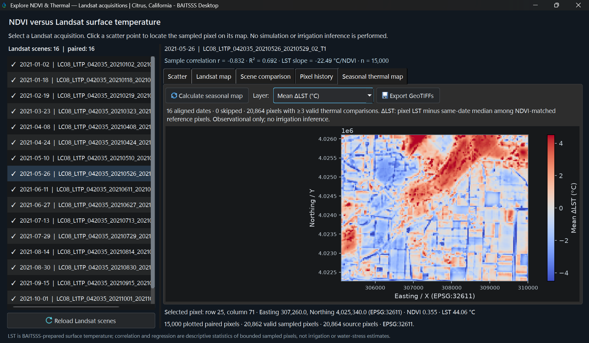
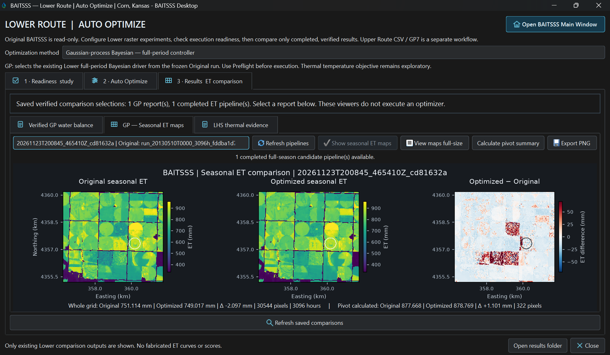
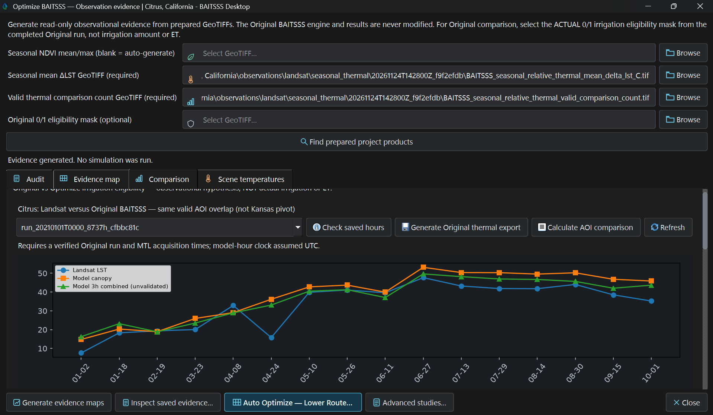
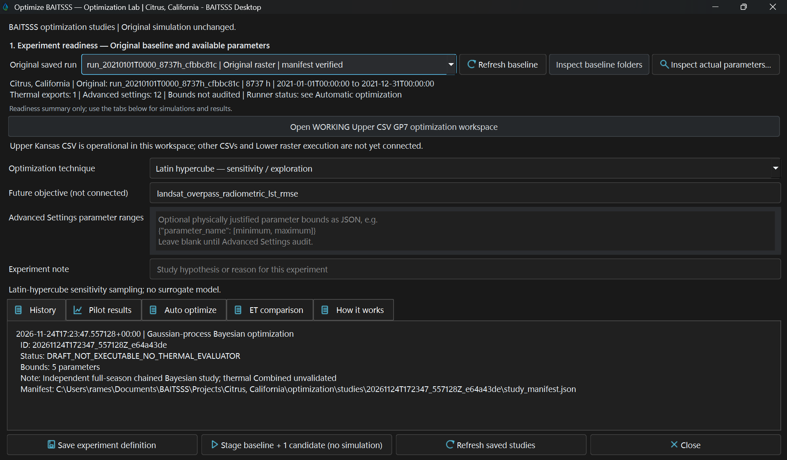
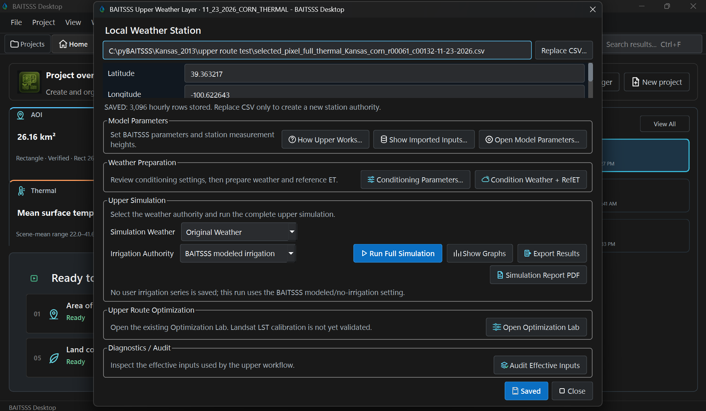
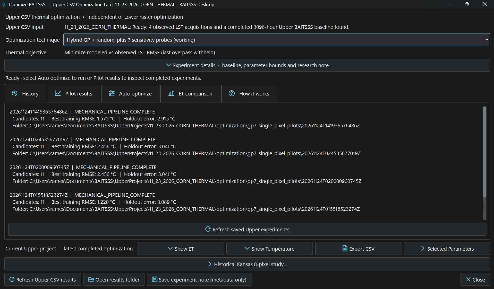
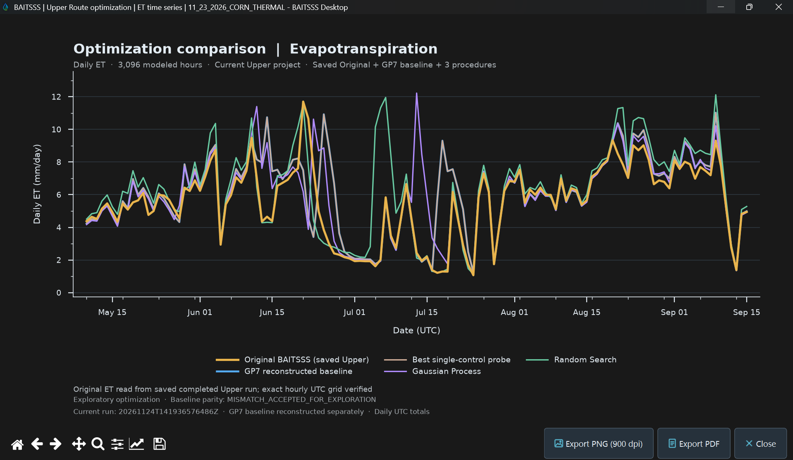
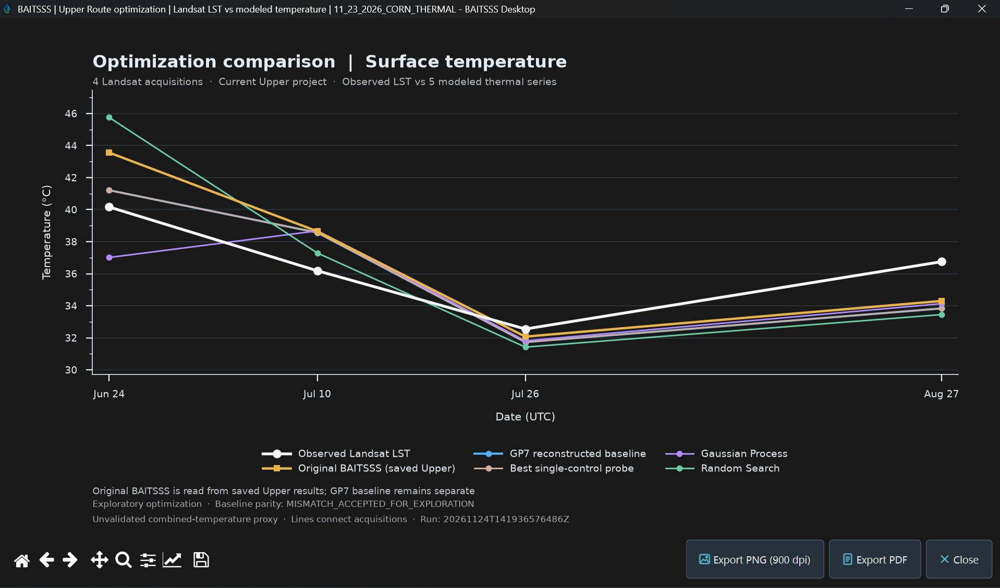
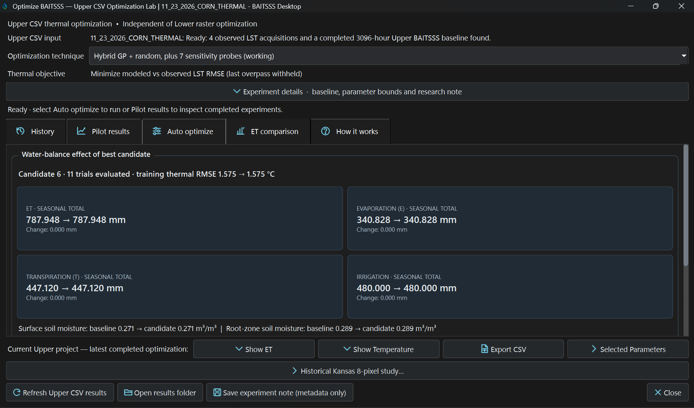
Source: BAITSSS Desktop development build, November 2026.
Package a stable, reproducible BAITSSS Desktop build, preserve Original science, distinguish experimental modules, document dependencies and input contracts, and run Kansas/Citrus/Yuma regression checks.
Test whether thermal constraints improve ET and irrigation predictions against independently measured lysimeter/EC fluxes and water records; report positive, neutral, or negative results.
Update the documentation as thermal methods and research results develop.
Current conclusion: The software can connect observed thermal scenes to independently reconstructed BAITSSS temperatures and experimental optimizer runs. Whether this additional thermal information improves continuous ET and irrigation prediction remains a testable, open research question.